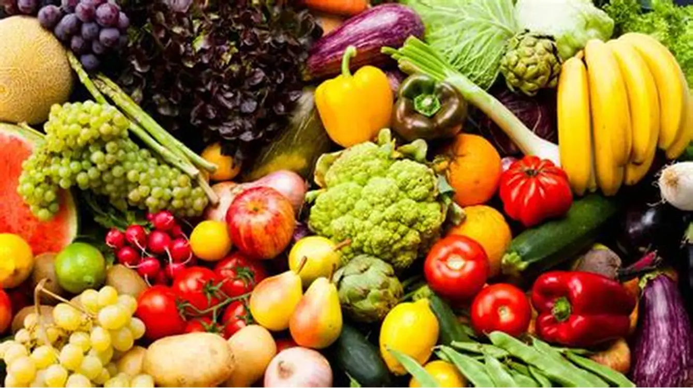
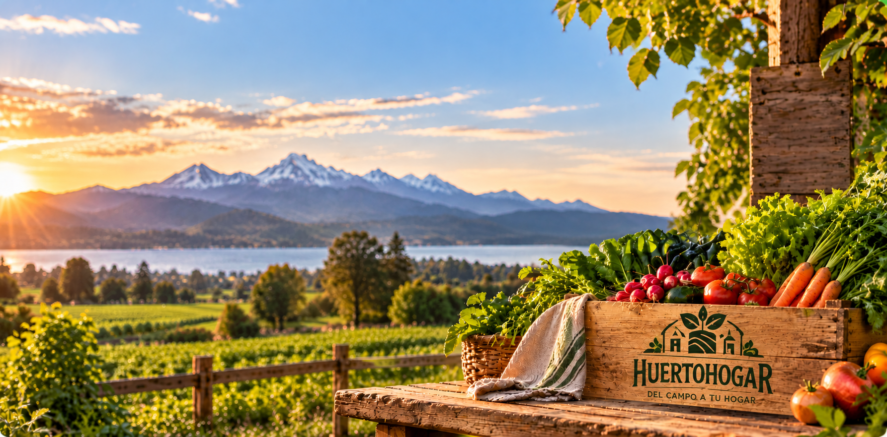
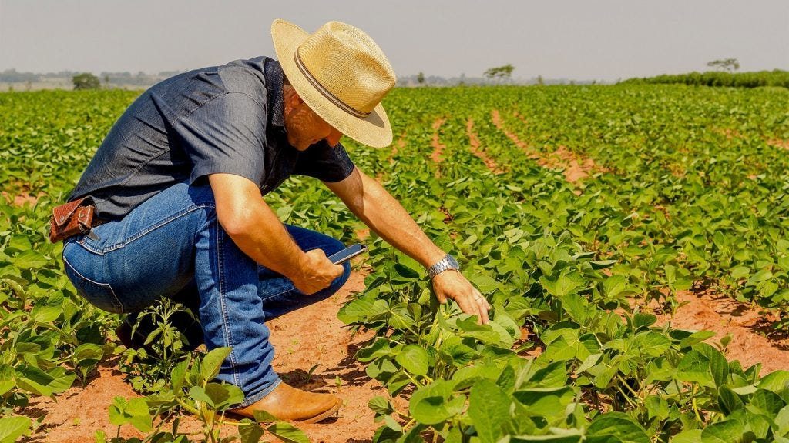
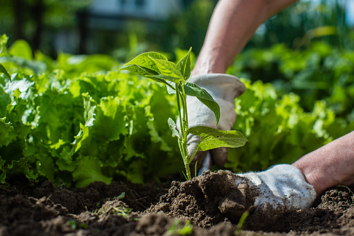
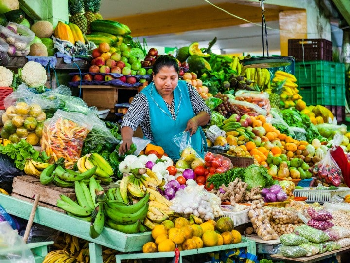

🥕
Productos frescos
Seleccionamos productos de calidad para conservar la frescura y el sabor en cada entrega.

HUERTOHOGAR
Conectamos con las familias chilenas con productos frescos, naturales y de calidad
Conoce nuestra historia
En HuertoHogar trabajamos para llevar la frescura y calidad de los productos del campo directamente a la puerta de nuestros clientes.
Creemos en una conexión más cercana entre las familias chilenas y los agricultores locales, apoyando una alimentacion saludable y prácticas agrícolas sostenibles.
Hoy estamos en distintos puntos de Chile, acercando productos frescos y naturales a más hogares.
Trabajamos cada día para que cada producto que llega a tu hogar represente frescura, calidad y respeto por nuestro entorno.

Seleccionamos productos de calidad para conservar la frescura y el sabor en cada entrega.

Promovemos prácticas responsables y una relación más consciente con la naturaleza.

Acercamos a los consumidores a los agricultores locales, fortaleciendo esta conexión.
Proporcionar productos frescos y de calidad directamente desde el campo hasta la puerta de nuestros clientes, garantizando frescura y sabor en cada entrega.
Nos comprometemos a fomentar una conexión más cercana entre los consumidores y los agricultores locales, apoyando prácticas agrícolas sostenibles y promoviendo una alimentación saludable.
Ser la tienda online líder en la distribución de productos frescos y naturales en Chile, reconocida por nuestra calidad, servicio al cliente y compromiso con la sostenibilidad.
Aspiramos a expandir nuestra presencia a nivel nacional e internacional, estableciendo un nuevo estándar en la distribución de productos agrícolas directos del productor al consumidor.
Llevamos nuestra conexión con el campo a distintos puntos del país.